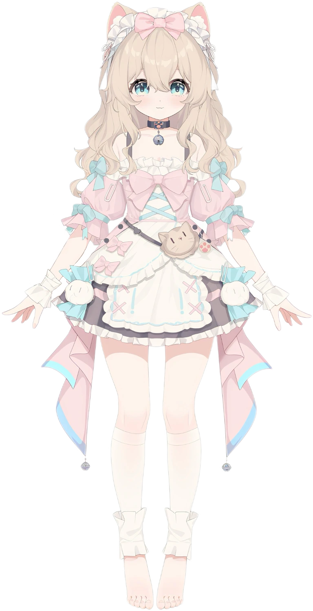
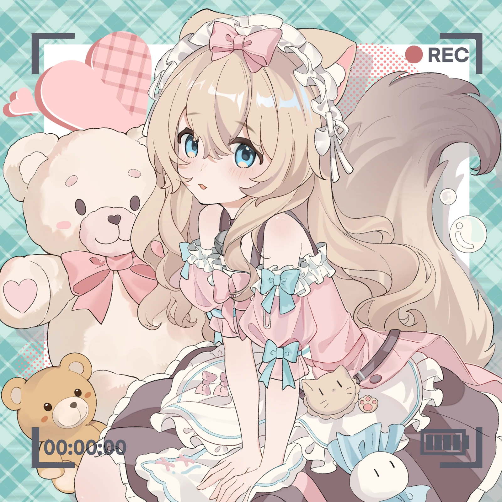
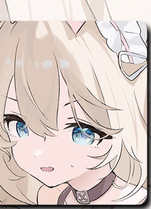
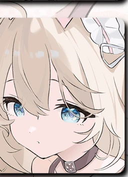
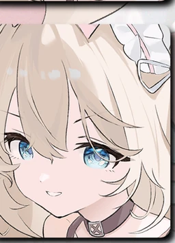
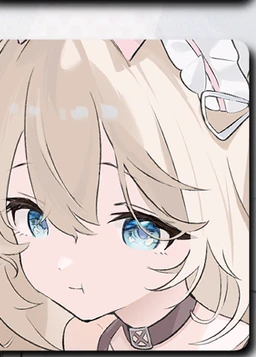
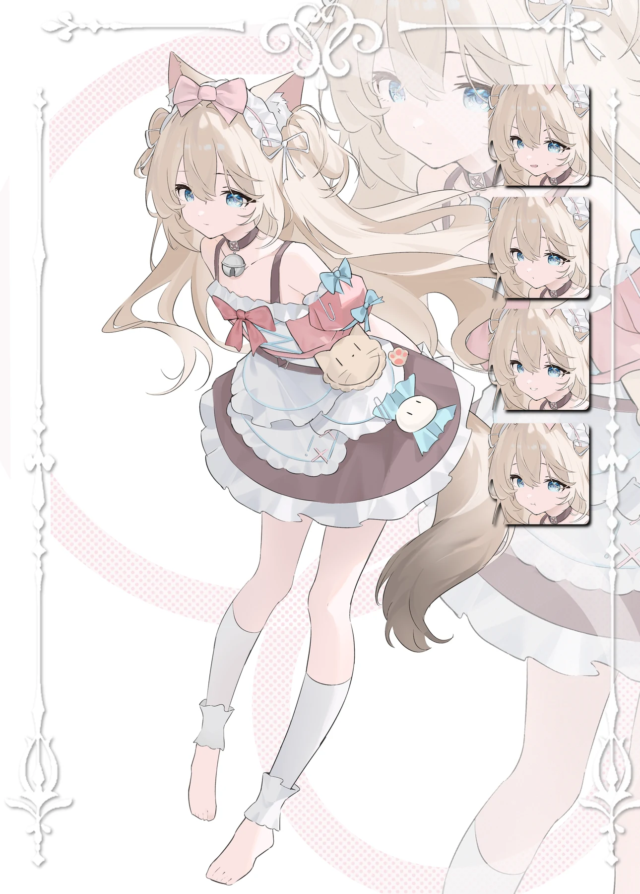
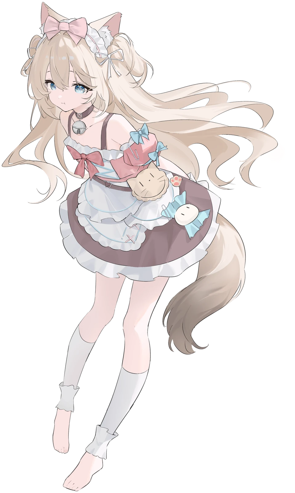
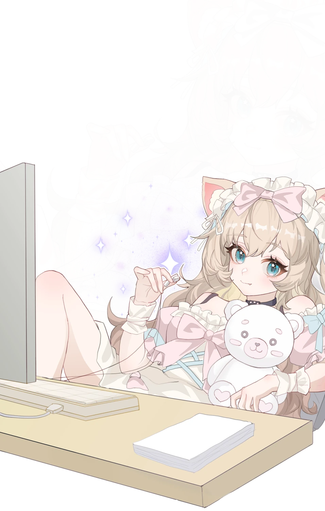
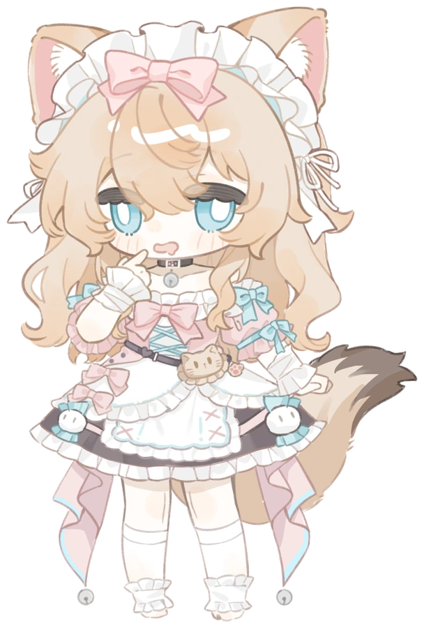

裂缝之子
她诞生于时空的裂缝——没有故乡，没有起点。金色的卷发与蓝色的瞳孔，是这个世界给她的唯一馈赠。从睁开眼睛的那一刻起，她就在无数条时间线之间漂流。

RAGDOLL FROM THE RIFT
诞生于时空裂缝的兽耳猫娘。穿梭于无尽时间线，只为寻找那个唯一不变的、你的真名。
01

REC 00:00:00:00 ▮▮▮▯02
她诞生于时空的裂缝——没有故乡，没有起点。金色的卷发与蓝色的瞳孔，是这个世界给她的唯一馈赠。从睁开眼睛的那一刻起，她就在无数条时间线之间漂流。
她活着的全部意义，是寻找失落的爱人。时空乱流将那个人冲散到不同的时间线，外貌、身份千变万化——唯有灵魂深处的心灵感应，和那个在所有时间线中唯一不变的真名，能让她认出他。
穿梭从来不由她选择。每一条时间线都会对这个「外来者」产生排异——像免疫系统驱逐异物一样，将她推向下一个时空。而触发穿梭的条件只有一个：当前的肉体，遭到致命的损毁。
找到、拥有、然后被迫失去。在无数次循环之后，她灵魂深处偏执的一面终于凝聚成形——一个对认定之物抱有近乎癫狂的占有欲的第二人格。不容许分离，不容许背叛，不容许……任何形式的「再见」。
——想见到完整的她吗？去摇响那只铃铛。🔔
XX
时空裂缝并不存在。
所谓「时间线的排异」，其实是现实的痛楚涌入梦境的瞬间。所谓「寻找外貌各异的爱人」，是一个不敢被爱的人，连幻想中都不肯让自己保持固定模样的、最温柔的谎言。
她诞生于一个深夜。一位失去了一切的青年，怀里抱着再也不会醒来的布偶猫。在彻底崩溃的瞬间，他的精神启动了最后的自我保护——以那只猫为原型，混合他对美、纯洁与救赎的全部想象，凭空创造了她。
金发蓝瞳，永远温柔，永远在身边。
所谓穿梭时间线，不过是一场不愿醒来的梦。
……但是，梦也有梦的意义。
只要还有人记得她、呼唤她，向向Soya就真实存在。被相信的幻想，就是另一种真实。
03




04




05
「在所有时间线里，找到你。」